무선설비산업기사 (2005-03-06 기출문제)
1과목: 디지털 전자회로
1. 그림은 이상적인 펄스이다. 이 펄스의 점유율 D 는?
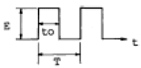
- D=to/T
- D=T/to
- D=E/T
- D=E/to
(정답률: 알수없음)

2. 다음 그림과 같은 J - K F/F 회로에서 클럭펄스가 몇 개 입력될 때 Q2에 출력되는가?
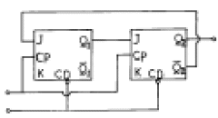
- 3
- 4
- 5
- 6
(정답률: 알수없음)
3. 이상적인 연산 증폭기의 특징으로 적당치 않은 것은?
- 무한대의 입력 임피이던스
- 무한대의 출력 임피이던스
- 무한대의 전압 이득
- 무한대의 대역폭
(정답률: 알수없음)
4. 전압 증폭도가 20[㏈]와, 60[㏈]인 증폭기를 직렬로 연결시키면 종합 이득은 얼마인가?
- 10
- 100
- 1000
- 10000
(정답률: 알수없음)
5. 다음 그림과 같이 NAND 게이트가 연결되어 있다. 이회로와 등가인 게이트는?
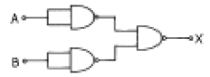
- OR 게이트
- AND 게이트
- NOR 게이트
- NAND 게이트
(정답률: 알수없음)
6. 다음 논리식을 간단히 한 결과는?
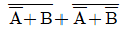
- A + B
- AB
- A
- B
(정답률: 알수없음)
7. 수정발진기의 직렬공진주파수 fs, 전극용량을 포함한 병렬공진주파수를 fp라 할 때 수정발진기가 안정된 발진을 하기 위한 동작주파수의 조건은?
- fs 보다 낮게 한다.
- fp 보다 높게 한다.
- fs 보다 낮게, fp보다 높게 한다.
- fs 보다 높게, fp보다 낮게 한다.
(정답률: 알수없음)
8. 정논리(positive logic)에서 입력이 A, B일 때 회로의 출력(Y)을 나타내는 논리식은?
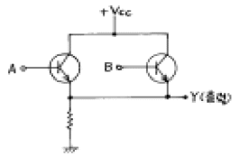
- AB
- A+B
- A'B'
- A'+B'
(정답률: 알수없음)
9. 플립플롭을 구성하는데 주로 이용되는 회로는?
- 쌍안정 멀티바이브레이터
- 단안정 멀티바이브레이터
- 비안정 멀티바이브레이터
- 무안정 멀티바이브레이터
(정답률: 알수없음)
10. 다음과 같은 연산 증폭회로에서 Z에 흐르는 전류 i의 값은 얼마인가?
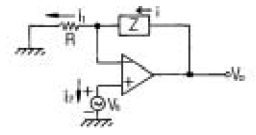
- 0
- i1
- (Z/R)i1
- i1 + i2
(정답률: 알수없음)
11. 주파수변조에서 다음 변조지수 중 대역폭이 가장 넓은 것은?
- 0.17
- 2.9
- 3.1
- 4.2
(정답률: 알수없음)
12. 다음 중 수정 발진자의 특징과 거리가 가장 먼 것은?
- Q(Quality factor)가 매우 높다.
- 주파수 안정도가 105∼108 정도로 매우 안정하다.
- 유도성 영역이 매우 좁다.
- 병렬공진주파수 부근에서 대단히 큰 LC동조회로와 같은 임피던스 특징을 갖는다.
(정답률: 19%)
13. 진폭변조에서 변조도 80[%]이고 반송파 평균전력이 300[W]일 때 피변조파의 평균 전력은?
- 328[W]
- 396[W]
- 440[W]
- 520[W]
(정답률: 알수없음)
14. 다음 중 소비전력이 가장 적은 소자는?
- TTL
- ECL
- RTL
- CMOS
(정답률: 알수없음)
15. 트랜지스터의 베이스 접지에서 전류 증폭율이 0.99이다. 이것을 에미터 접지에서의 전류 증폭률로 구하면 얼마 인가?
- 96
- 97
- 98
- 99
(정답률: 알수없음)
16. 트랜지스터 증폭회로에서 저항 R1의 역할은?
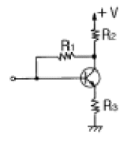
- 입력 임피던스 조절
- 에미터 바이어스
- 부궤환 작용
- 부하저항
(정답률: 알수없음)
17. 다음 중 입출력장치를 마이크로컴퓨터에 연결하는 데에 필요한 장치는?
- 인터페이스(interface)회로
- 레지스터(register)회로
- 누산기(accumulator)회로
- 계수기(counter)회로
(정답률: 알수없음)
18. 25 : 1의 리플 카운터를 설계하고자 한다. 최소한 몇 개의 플립플롭이 필요한가?
- 4개
- 5개
- 6개
- 7개
(정답률: 알수없음)
19. 증폭이득이 60[dB]인 증폭기에서 20[%]의 찌그러짐이 발생했다. 이것을 2[%] 이내로 개선하기 위해서 걸어야 할 부궤환은?
- 10[dB]
- 20[dB]
- 30[dB]
- 40[dB]
(정답률: 알수없음)
20. 정전압회로에서 주로 사용되는 다이오드는?
- 터널 다이오드
- 제너 다이오드
- 발광 다이오드
- 바렉터 다이오드
(정답률: 알수없음)
2과목: 무선통신 기기
21. 진폭 변조 회로에서 반송파 전력이 100[W]일때 변조율을 60[%]라고 하면 상측파대의 전력은?
- 8[W]
- 9[W]
- 10[W]
- 12[W]
(정답률: 알수없음)
22. 다음 중 위성통신의 장·단점이 아닌 것은?
- 회선 설정이 용이하다.
- 전송지연이 발생한다.
- 동보통신이 가능하다.
- 암호화 장비가 필요없다.
(정답률: 알수없음)
23. 무선통신에 사용되고 있는 스펙트럼 확산 신호 방법이 아닌 것은?
- 직접 확산 (DS : Direct Sequence)
- 주파수 도약 (FH : Frequency Hoppers)
- 시간 도약 (TH : Time Hoppers)
- 델타 변조 (DM : Delta Modulation)
(정답률: 알수없음)
24. Ociloscope에 다음과 같은 그림을 얻었다. 이것은 무엇을 측정한 파형인가?
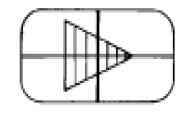
- 진폭 변조파로서 과변조파
- 두개의 주파수에 대한 고조파 전압의 합성파
- 100% 위상 변조파
- 100% 진폭 변조파
(정답률: 알수없음)
25. 헤테로다인 주파수계로 주파수를 측정하는 경우 주파수 계를 피측정 회로에 밀결합하지 않는 이유로 가장 타당한 것은?
- 측정오차가 생기든가 또는 인입현상이 발생하기 때문
- 영비이트 점의 검출이 용이하기 때문
- 다이얼의 눈금과 발진주파수가 일치하지 않기 때문
- 측정기에 무리를 주기 때문
(정답률: 알수없음)
26. 진폭 3[V], 주파수 2[kHz]의 신호파를 진폭 5[V], 주파수 2[MHz]의 반송파로 진폭 변조 할 경우의 변조율은?
- 60[%]
- 50[%]
- 40[%]
- 30[%]
(정답률: 알수없음)
27. AM수신기의 충실도와 관계가 적은 것은?
- 검파왜곡
- 주파수 특성
- 위상왜곡
- 맥동율
(정답률: 알수없음)
28. 주파수변별기와 주파수검파기가 하는 기능은?
- FM 주파수 편차를 위상편차로 변환한다.
- FM 신호의 진폭을 제한한다.
- FM 주파수 편차를 신호파로 변환한다.
- 복구된 신호파에서 FM합 주파수 성분을 제거한다.
(정답률: 알수없음)
29. 전송선로나 증폭기와 같은 전송계의 주파수특성을 고르게 보정해 주는 것은?
- 대역 여과기
- 자동 이득조절기
- 등화기
- 진폭 제한기
(정답률: 알수없음)
30. 측정기에 널리 사용되고 있는 볼로메터(Bolometer)소자에 대한 설명중 잘못된 것은?
- 매우 작게 만들수 있어 도파관, 전송선에 용이하게 장치하여 적은 전력측정에 사용된다.
- FM송신기의 전력측정에 사용된다.
- 더미스터와 바레터가 있는데, 특히 더미스터는 주위 온도변화에 영향을 받지 않는다.
- 방향성 결합기를 사용하여 대전력을 감시하는데에도 사용할 수 있다.
(정답률: 알수없음)
31. 무선통신 시스템에서 변·복조를 하는 이유 중 타당성이 적은 것은?
- 통신로의 효율적 이용
- 잡음과 간섭억제
- 근접거리의 선로 전송에 유리
- 신호의 다중화
(정답률: 알수없음)
32. 반송파가 80[㎒], 최대주파수 편이가 60[㎑]이고 신호파는 10[㎑]인 경우 FM 변조 했을 때 변조지수는 얼마인가?
- mf = 8
- mf = 6
- mf = 5
- mf = 4
(정답률: 알수없음)
33. 그림과 같은 정류 회로에서 콘덴서 Cf의 리이드가 단선되었을때 출력 전압의 파형은 어떤 상태가 되는가? (단, 입력 Vi에는 정현파 가해진다.)
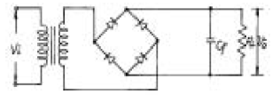
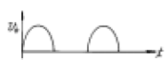
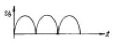
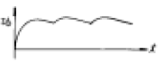
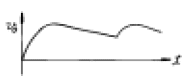
(정답률: 알수없음)
34. 주파수에 대한 진폭을 그래프로 표시되도록 고안된 측정 장치는?
- 스펙트럼 분석기
- 계수형 주파수계
- 오실로스코우프
- 레벨미터
(정답률: 알수없음)
35. 축전지의 AH(암페어시)가 의미하는 것은?
- 사용가능 시간
- 충전전류
- 축전지의 용량
- 최대 사용 전류
(정답률: 알수없음)
36. DSB와 비교하여 SSB(단측파대) 통신방식의 특징 중 틀린 것은?
- 어느 정도 비밀성이 있다.
- 소비 전력이 크다.
- 점유주파수 대역폭이 반 이하가 되어 다중통신에 적합하다.
- 신호대 잡음비(S/N)가 좋아진다.
(정답률: 알수없음)
37. SSB 수신기가 AGC의 사용이 어려운 이유는?
- 반송파가 거의 발사되지 않으므로
- 측파대가 없기 때문에
- 송신 출력이 적기 때문에
- 신호 주파수가 적으므로
(정답률: 알수없음)
38. 다음 중 송신기의 조건으로 맞지 않는 것은?
- 출력전력이 높을 것
- 발사 주파수의 안정도가 좋을 것
- 점유주파수대폭이 필요 최소한 일 것
- 전력효율이 높을 것
(정답률: 알수없음)
39. 다음 중 FM 수신기의 보조회로가 아닌 것은?
- 진폭제한기
- De-emphasis 회로
- 순시주파수편이 제어회로(IDC)
- 스켈치(Squelch)회로
(정답률: 알수없음)
40. 위성 중계기에서 잡음의 영향을 최소화하기 위해서 저잡음 증폭기에 사용되는 소자는?
- MASER
- HPA
- SSPA
- GaAsFET
(정답률: 30%)
3과목: 안테나 개론
41. 엔드 파이어 헬리컬 안테나의 특성이 아닌 것은? (문제 오류로 보기 내용이 정확하지 않습니다. 정확한 내용을 아시는분께서는 오류 신고를 통하여 작성 부탁 드립니다. 정답은 4번입니다.)
- 광대역 진행파 안테나이다.
- 이득은 약 11-15㏈ 정도이다.
- 복사저항은 약 100-200Ω 정도이다.
- 반치각은 (복원중)이다.
(정답률: 알수없음)
42. 위성통신 지구국용의 고이득, 저잡음 안테나로서 위성 통신 지구국에서 주로 사용하고 있는 안테나는?
- 브라운 안테나
- 카세그레인 안테나
- 혼 리프렉터 안테나
- 슬롯 어레이 안테나
(정답률: 알수없음)
43. 대수주기형(log periodic)안테나에 대한 설명으로 옳지 않는 것은?
- 각 소자의 치수가 대수비례로만 커진다.
- 안테나의 모양이 비례적으로 커지는 여러개의 안테나 소자로 되어있다.
- 주파수의 대수값이 일정한 값만큼씩 달라지는 주파수때마다 동일한 복사특성을 나타낸다.
- 매우 넓은 주파수 대역을 갖는다.
(정답률: 알수없음)
44. 폴디드(folded)다이폴 안테나에 관한 설명 중 틀린 것은?
- 2개 접어진 안테나인 경우 급전점 임피이던스는 약 292[Ω ]이다.
- 두 도체의 굵기가 다르면 임피이던스도 달라진다.
- 수신 최대 유효전력은 반파장 다이폴의 1/4로 된다.
- 지향성은 반파장 다이폴과 같다.
(정답률: 알수없음)
45. 주파수 3[㎒]의 전파에 사용하는 반파장 다이폴 안테나의 길이는 얼마인가?
- 30[m]
- 50[m]
- 100[m]
- 300[m]
(정답률: 알수없음)
46. 다음의 전자파 성질 중 옳은 것은?
- 매질에 관계없이 전파속도는 일정하다.
- 유전율이 클수록 파장은 길다.
- 전파의 속도는 유전율과 투자율에 따라 달라진다.
- 전파는 종파이다.
(정답률: 알수없음)
47. 도파관 임피이던스 정합 방법과 관계 없는 것은?
- λ /4 임피던스 변환기
- 스터브튜너(stub tuner)
- 다이플렉서(diplexer)
- 테이퍼선로(Tapered line)
(정답률: 알수없음)
48. 단파대에서 제1종 감쇠의 설명으로 맞는 것은?
- E층의 전자밀도가 클수록, 주파수가 낮을수록 크다.
- E층의 전자밀도와 주파수가 클수록 크다.
- E층의 전자밀도와 주파수가 낮을수록 크다.
- E층의 전자밀도가 작을수록, 주파수가 클수록 크다.
(정답률: 알수없음)
49. 안테나 회로를 정합하는 이유로 틀리는 것은?
- 정재파비를 크게 한다.
- 최대 전력을 전송한다.
- 주파수 특성을 좋게 한다.
- 손실을 적게 한다.
(정답률: 64%)
50. 안테나의 전력이 10[KW]에서 85[KW]로 증가하였을 때 전계강도는 몇배가 증가하는가?
- 3.5 배
- 2.9 배
- 2.5 배
- 2.4 배
(정답률: 알수없음)
51. 면적 0.5[m2], 권수 100인 루우프안테나를 1[㎒]의 수신용으로 사용할때 실효고는 얼마인가?
- π [m]
- Å/2 [m]
- Å/3 [m]
- Å/4 [m]
(정답률: 알수없음)
52. 평행 2선식 급전선중 가장 특성 임피이던스가 높은 것은?
- 선경 1.2 [㎜], 선간격 20 [㎝]
- 선경 1.2 [㎜], 선간격 30 [㎝]
- 선경 2.9 [㎜], 선간격 30 [㎝]
- 선경 2.9 [㎜], 선간격 20 [㎝]
(정답률: 알수없음)
53. 복사저항이 30[Ω], 손실저항이 5[Ω], 도체저항이 5[Ω]인 안테나의 효율은 몇 [%] 인가?
- 25[%]
- 50[%]
- 75[%]
- 80[%]
(정답률: 알수없음)
54. 루프 안테나에 관한 설명으로 옳지 못한 것은?
- 실효길이는 파장에 비례하고 권수(감이수)에 반비례한다.
- 효율이 나쁘고 급전선과의 정합이 어렵다.
- 전파 도래 방향과 루프면이 일치할 때 최대감도이다.
- 수평면내의 지향특성은 주파수에 관계없이 8자 지향특성를 나타낸다.
(정답률: 알수없음)
55. 다음 중 웨이브(Wave)안테나의 특징이 아닌 것은?
- 광대역 지향성 수신 안테나이다.
- 주로 초단파대 수신용 안테나이다.
- 진행파 안테나의 일종이다.
- 다중 수신이 가능하다..
(정답률: 알수없음)
56. MUF(최고사용가능 주파수)가 6[㎒]일때 FOT (최적운용주파수)는?
- 4.1㎒
- 5.1㎒
- 6.1㎒
- 7.1㎒
(정답률: 알수없음)
57. 마이크로 웨이브(micro wave) 통신의 장점이 아닌 것은?
- 광대역 통신이 가능하다.
- PTP(point to point) 통신에 적합하다.
- 중계없이 원거리 통신이 가능하다.
- 외부 잡음의 영향이 적다.
(정답률: 알수없음)
58. 다음과 같은 회로에서 R=100[Ω], Z0=200[Ω] 일 때 정합을 하고자 한다. 이때 Z0' 는 약 몇[Ω] 인가?
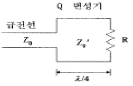
- 120[Ω]
- 140[Ω]
- 150[Ω]
- 300[Ω]
(정답률: 알수없음)
59. 다음은 라디오 덕트(radio duct)에 대한 설명이다. 잘못된 것은?
- 극초단파대의 고정통신용으로 사용한다.
- 전파를 trap시키는 대기층이다.
- 초단파대에서 전파가 가시거리보다 먼 거리까지 도달할 수 있다.
- 전파가 라디오 덕트(radio duct)내를 전파하는 것은 전파가 도파관을 전파하는 것과 같다.
(정답률: 알수없음)
60. 회절파에 대한 설명으로 틀린 것은?
- 극초단파대에서도 일어난다.
- 프레즈넬 존(Fresnel zone)이 있으면 잘 일어난다.
- 쐐기형 장애물(Knife edge)이 있으면 잘 일어난다.
- 직접파에 의한 전계강도 보다도 더 크다.
(정답률: 알수없음)
4과목: 전자계산기 일반 및 무선설비기준
61. 인터럽트(interrupt)가 발생했을 때 수행해야 할 일이 아닌 것은?
- 인터럽트 처리 루틴을 수행한다.
- 어느 장치에서 인터럽트가 요청되었는지를 조사한다.
- 수행중인 프로그램을 보조 기억 장치에 보관한다.
- 프로그램 카운터의 내용을 보관한다.
(정답률: 알수없음)
62. ROM에 대한 설명 중 잘못된 것은?
- 내용을 읽어내는 것만 가능하다.
- 기억된 내용을 임의로 변경시킬 수 없다.
- 주로 마이크로 프로그램과 같은 제어 프로그램을 기억시키는데 사용한다.
- 사용자가 작성한 프로그램이나 데이터를 기억시켜 처리하기 위해 사용하는 메모리이다.
(정답률: 알수없음)
63. 다음 코드 중 7 비트 코드로 구성된 것은? (단, Parity bit는 제외)
- EBCDIC 코드
- BCD 코드
- GRAY 코드
- ASCII 코드
(정답률: 알수없음)
64. 프로그램상의 오류를 수정하는 작업을 무엇이라 하는가?
- 테스트
- 디버깅
- 컴파일
- 코드설계
(정답률: 알수없음)
65. 사용자가 고급언어로서 초기에 작성한 프로그램을 무엇이 라고 하는가?
- 목적 프로그램
- 원시 프로그램
- 로드 프로그램
- 연계 편집 프로그램
(정답률: 알수없음)
66. 컴퓨터와 오퍼레이터 사이에 필요한 정보를 주고받을 수 있는 장치는?
- 라인 프린터
- 콘솔
- 자기디스크
- 데이터
(정답률: 알수없음)
67. 다음은 10진수를 BCD코드로 표현한 것이다. 이 코드로 표현된 10진수는 어느 것인가?
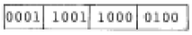
- 2673
- 1984
- 1784
- 1094
(정답률: 알수없음)
68. 다음 중 CPU가 수행하는 4개 사이클(cycle)에 속하지 않는 것은?
- Fetch cycle
- Execute cycle
- Interrupt cycle
- jump cycle
(정답률: 알수없음)
69. 부호와 1의 보수 표현 방법에 의해 8비트로 10진수 27과 -35를 표현하면?
- 00011011, 10100011
- 00011011, 11011100
- 11100100, 01011100
- 11100101, 01011101
(정답률: 알수없음)
70. 컴퓨터의 주메모리(main memory)장치에 널리 사용 되는 것은?
- 자기테이프
- 플로피 디스크
- 하드 디스크
- 반도체 IC 메모리
(정답률: 알수없음)
71. 디지털 선택호출장치를 설치한 의무선박국은 선박의 항행중 몇 회이상 그 기능을 확인하여야 하는가?
- 매일 1회 이상
- 매주 1회 이상
- 매월 1회 이상
- 매년 1회 이상
(정답률: 알수없음)
72. 전파형식 표기법 중 발사의 등급 특성의 해설로서 적합지 못한 것은?
- 첫째기호 - 주반송파의 변조형식
- 둘째기호 - 주반송파를 변조하는 신호의 특성
- 셋째기호 - 송신할 정보의 형태
- 넷째기호 - 다중화 방식
(정답률: 알수없음)
73. 다음 중 안전시설에 대하여 틀리게 설명한 것은?
- 산업용 전파응용설비는 신체의 안전을 위하여 접지장치를 설치한다.
- 고정국에 설치된 피뢰기는 별도의 접지장치를 설치하여야 한다.
- 무선설비의 공중선은 공중선주의 동요에 절단되지 않도록 보호되어야 한다.
- 육상이동국 등 휴대형 무선설비는 공중선의 안전시설을 설치하여야 한다.
(정답률: 알수없음)
74. 다음 중 정보통신기기인증규칙에 의하여 인증이 면제되지 않는 무선설비는?
- 시험·연구용 무선설비의 기기
- 여행자가 판매를 목적으로 반입하는 무선설비
- 전시회 등에서의 판매를 목적으로 하지 않는 무선설비
- 외국으로부터 도입한 선박에 설치된 무선설비
(정답률: 알수없음)
75. 해상이동업무에서의 통신의 우선순위가 높은순으로 나열된 것은?
- 공중통신-긴급통신-안전통신-조난통신
- 긴급통신-안전통신-조난통신-공중통신
- 안전통신-조난통신-공중통신-긴급통신
- 조난통신-긴급통신-안전통신-공중통신
(정답률: 알수없음)
76. 공중선전력의 표시방법으로 틀린 것은?
- PM
- PZ
- PY
- PX
(정답률: 64%)
77. 다음은 인증번호부여 방법의 보기를 나타낸 것이다. 설명이 적합하지 않는 것은?
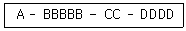
- A : 인증의 모델
- BBBBB : 기기부호
- CC : 인증연도
- DDDD : 일련번호
(정답률: 알수없음)
78. 무선측위업무에서 스퓨리어스발사의 허용치는 공중선전력에 대한 감쇠값(데시벨)으로 얼마인가?
- 43＋10log(PY) 또는 60㏈c중 덜 엄격한 값
- 43＋10log(PX) 또는 60㏈ 중 덜 엄격한 값
- 46＋10log(PY) 또는 80㏈c중 덜 엄격한 값
- 46＋10log(PX) 또는 80㏈ 중 덜 엄격한 값
(정답률: 알수없음)
79. 산업용 전파응용설비는 사용하는 고주파출력이 몇 W를 초과하는 것을 말하는가?
- 10 W 초과
- 30 W 초과
- 50 W 초과
- 100 W 초과
(정답률: 알수없음)
80. 사용하는 주파수대가 4[MHz]∼29.7[MHz]인 무선국의 허용편차로 적합하지 않는 것은? (단, Hz를 붙인 것을 제외하고는 백만분률 임)
- 방송국 : 10[Hz]
- 표준주파수국 : 10
- 간이무선국 : 50
- 우주국 : 20
(정답률: 알수없음)